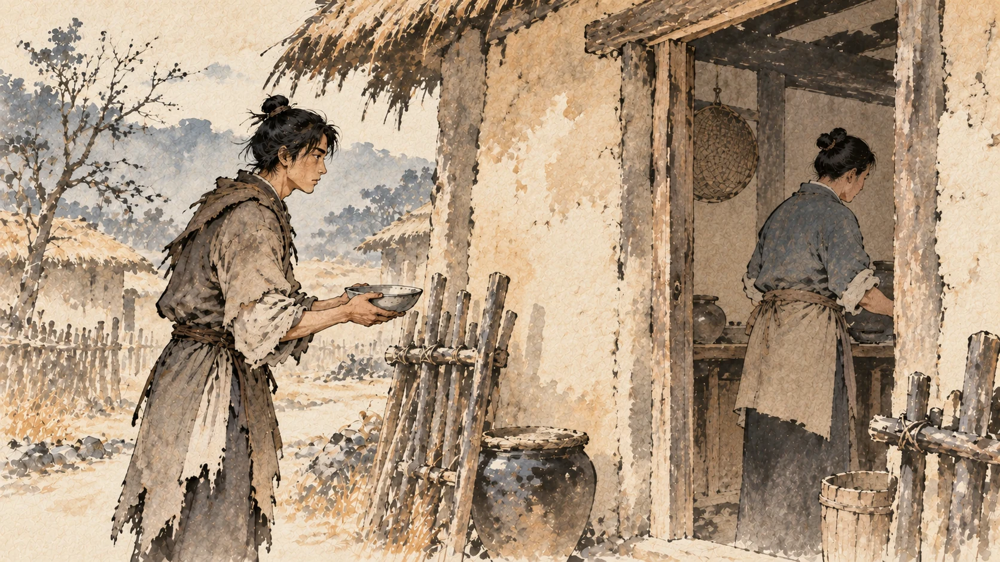
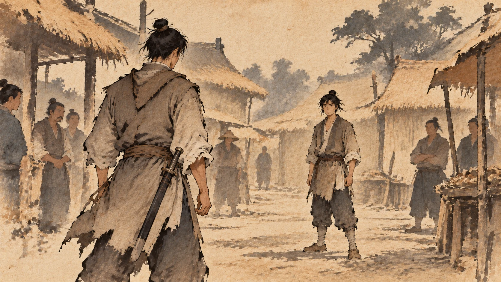
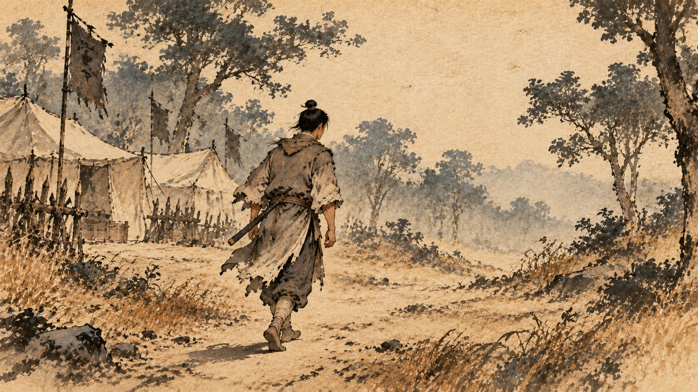
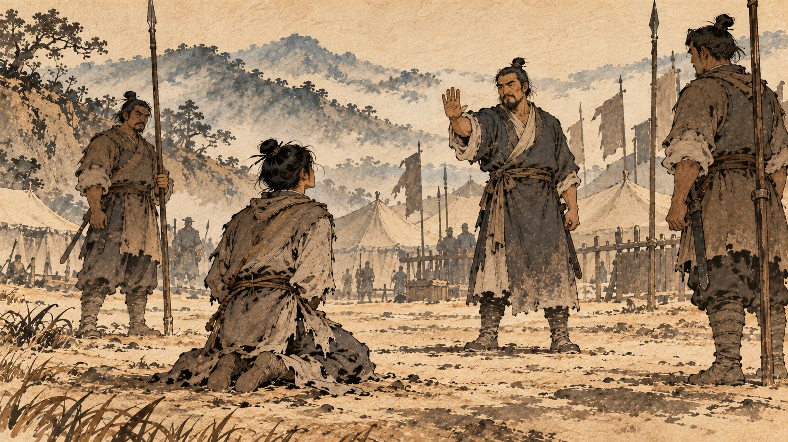
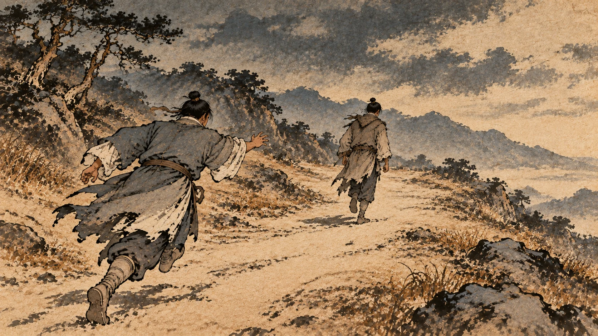
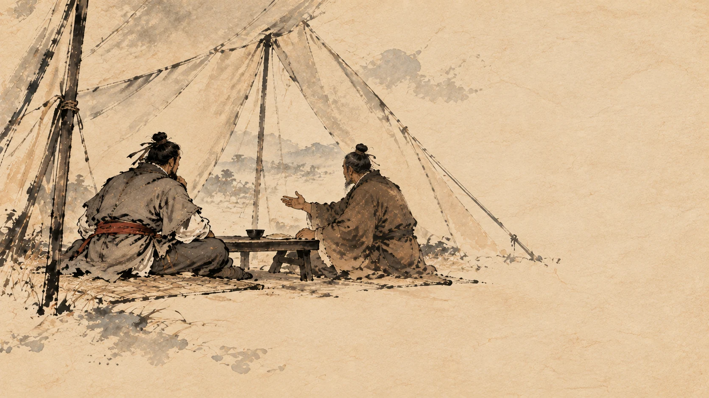
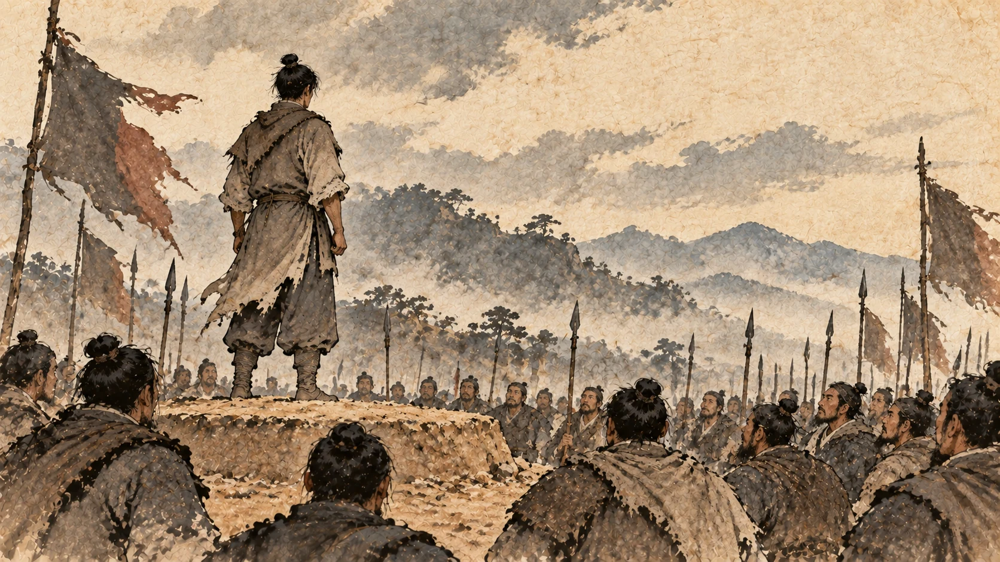
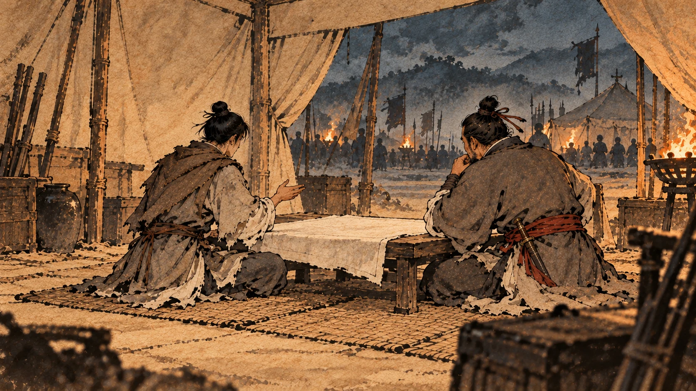

萧何追韩信
一、一个谁都看不起的人

先说这个人早年的档案，写得很不好看。
淮阴侯韩信者，淮阴人也。始为布衣时，贫，无行，不得推择为吏；又不能治生商贾。
韩信任淮阴，还是平头百姓的时候，穷，没有好名声，所以推荐不上去做官；又不会做买卖谋生。
“无行”两个字挺重的——意思是品行上有问题、口碑不好。他后来的封号是“淮阴侯”，但这时候他什么都不是。
那靠什么活？《史记》接着说：常从人寄食饮，人多厌之者。
经常到别人家蹭饭，很多人讨厌他。①
二、亭长家那顿饭
他蹭饭蹭得最久的一家，是下乡南昌亭长家。
几个月下来，亭长的妻子受不了了。她的办法很讲究：乃晨炊蓐食。
早早起来做饭，在床上就把饭吃了。②
到吃饭的时候韩信来了，锅里没有他的饭。
《史记》写韩信的反应只有八个字：信亦知其意，怒，竟绝去。
他也知道人家的意思，生气了，从此再没去。
这一笔很重要。韩信这辈子有一根很硬的骨头：他可以受穷，但不能受辱。这一条你记住，后面那件“袴下之辱”才看得懂。
三、漂母
后来他在城下钓鱼。
那时候河边上有一群妇人在漂洗丝棉——就是“漂母”。其中有一个看见韩信饿着，就把自己的饭分给他吃。
这一给，给了几十天。
韩信很高兴，跟她说：吾必有以重报母。
我将来一定有重重报答您的那一天。
那位妇人的回答是一顿骂：
大丈夫不能自食，吾哀王孙而进食，岂望报乎！
大丈夫不能自己养活自己，我是可怜你这位年轻人（“王孙”是对年轻人的客气称呼）才给你饭吃，难道是图你报答吗！
这段话的分量在哪？
她没有鼓励他，也没有看得起他。她说的是实话：一个大小伙子连自己都养不活。而她做的是另一件事：给了几十天的饭，还说不要回报。
她既看穿了他，也没有嫌弃他。③
四、袴下

然后是那个流传最广的场面。
淮阴的街上有个屠户家的少年挑衅韩信，他说：若虽长大，好带刀剑，中情怯耳。
你虽然长得高大，喜欢带着刀剑，其实心里胆小。
当着一街的人，他给了韩信两个选项：信能死，刺我；不能死，出我袴下。
你要是不怕死，就刺我；要是怕死，就从我裤裆底下钻过去。
《史记》在写韩信动手之前，先写了他的一个动作：於是信孰视之。
韩信盯着他看了很久。
然后才俯下身，从那个少年的裤裆下面爬过去。街上的人全笑了，都觉得他胆小。④
这个场面被人讲了两千年，都说他在忍。
我读的时候，最注意的是“孰视之”三个字。那不是害怕的看，是算账的看。一个连饭都吃不上、还被人当众逼到这一步的人，看完之后选择爬过去——他算的是“不值当”。
这跟他后来在战场上做的事是同一路东西：先算清楚代价，再决定动不动。
五、他换过三个老板

乱世一起来，韩信拿着剑投了项梁。在项梁手下，他“无所知名”——没人知道他。
项梁死了，他归属项羽。项羽给他一个官：郎中。这是个近侍性质的职位，能见到主帅，但没有实权。
他“数以策干项羽”，好几次拿计策去说服项羽。
结果是：“羽不用。”
项梁、项羽都没用他。⑤刘邦进蜀地的时候，韩信从楚营跑出来，投了汉。
在汉营，他先是当“连敖”——一个接待宾客的小官，仍然没人知道他。⑥
到这时候，他已经换了三个老板，一个都没用他。
六、差点被砍头的那个瞬间

然后在汉营出了事。
韩信犯了法，按律当斩。同一批被斩的已经有十三个人死了，轮到韩信。
他抬起头，正好看见滕公。滕公就是夏侯婴——刘邦的老乡兼司机（他后来的职务是太仆，管车马），鸿门宴那天跟着刘邦一起走小路回来的四个人之一。
韩信喊了一句：
上不欲就天下乎？何为斩壮士！
您（刘邦被人称为“上”）不是想得天下吗？为什么要杀壮士？
夏侯婴的反应是：奇其言，壮其貌。
觉得他这话不寻常，看他的相貌也不寻常。于是放了他，不斩了。跟他一聊，非常高兴。⑦
夏侯婴把这事报告上去，刘邦给了韩信一个官：治粟都尉，管军粮。
《史记》在这里泼了一盆冷水：上未之奇也。
刘邦并没有觉得这个人有什么特别。
真正看出他有本事的人，是另一个人。
韩信好几次跟萧何谈话，萧何的反应是三个字：何奇之。
萧何觉得他不寻常。⑧
七、跑掉的人

第八章说过那个局面：到了南郑，汉军的将领和士兵大批往东跑。
《史记》在这一段给了个数字：诸将行道亡者数十人。
路上跑掉的将领有几十个。
韩信也算了一笔账。他想的是：萧何已经好几次跟刘邦提过我，刘邦还是不用我。
于是他也走了。⑨
萧何听说韩信走了，做了一件事：何闻信亡，不及以闻，自追之。
“不及以闻”四个字的意思是——来不及向刘邦报告，就自己去追了。
一个丞相，扔下本职工作，连夜出城去追一个管军粮的。
有人跑去报告刘邦：丞相何亡——丞相萧何跑了。
刘邦的反应是：上大怒，如失左右手。
大怒，像失去了左右手一样。⑩
注意这个比喻。跑了十几个将领，刘邦没什么反应；萧何一跑，他的反应是“失去了左右手”。
这时候刘邦还不知道萧何是去追人的。
八、追回来了

过了一两天，萧何回来见刘邦。
刘邦又气又高兴，骂他：若亡，何也？
你也跑了，为什么？
萧何说：臣不敢亡也，臣追亡者。
我不敢跑，我是去追跑的人。
刘邦问：若所追者谁？
你追的是谁？
萧何说：韩信也。
刘邦又骂：诸将亡者以十数，公无所追；追信，诈也。
跑掉的将领几十个，你一个都不追；你说你去追韩信，骗谁呢。⑪
然后萧何说了这段话——这是整章里最要紧的一段推荐：
诸将易得耳。至如信者，国士无双。王必欲长王汉中，无所事信；必欲争天下，非信无所与计事者。顾王策安所决耳。
那些将领容易得。至于韩信这样的人，是国士无双——全国找不出第二个。大王要是打算一辈子待在汉中当王，那用不着他；要是想争天下，除了韩信没有第二个人能跟您商量这件事。就看大王怎么定了。
刘邦说：吾亦欲东耳，安能郁郁久居此乎？
我也想往东打，怎么能闷在这儿待一辈子？
萧何接了一句：王计必欲东，能用信，信即留；不能用，信终亡耳。
您要是决定东进，能用韩信，他就留下；不能用，他终究还是要跑。⑫
刘邦说：吾为公以为将。
看在你的面子上，让他当个将军。
萧何说：虽为将，信必不留。
当将军，他还是留不住。
刘邦说：以为大将。
让他当大将。
萧何说：幸甚。
好极了。
刘邦这就打算把韩信叫来封官。
萧何又拦了一次：王素慢无礼，今拜大将如呼小儿耳，此乃信所以去也。王必欲拜之，择良日，斋戒，设坛场，具礼，乃可耳。
大王一向傲慢、不讲礼节，现在要拜大将，跟叫小孩子似的——这就是韩信要走的原因。您真要拜他，就挑个好日子，斋戒，设坛场，把礼节做足。
刘邦答应了。⑬
萧何在这件事上干了两件事：一是替刘邦认定了这个人，二是逼刘邦把这件事做出分量来。
他很清楚：让一个跑了三个老板的人留下来，靠的不是给他官，是让他看见这个官有多重。
九、登坛那天

《史记》写了那天的场面：诸将皆喜，人人各自以为得大将。至拜大将，乃韩信也，一军皆惊。
将领们都很高兴，每个人都以为大将就是自己。等到登坛拜将，一看，是韩信。全军都吃了一惊。⑭
“一军皆惊”四个字，把韩信此刻的处境写完了：他要带的这支军队，没有一个人听说过他。
十、那场对话

拜将的典礼结束，刘邦坐定，问了一句：丞相数言将军，将军何以教寡人计策？
丞相好几次提到将军，将军有什么可以教我的？
韩信先谢过，然后反问：今东乡争权天下，岂非项王邪？
您往东去争天下，对手不就是项王吗？
刘邦说：然。
韩信接着问：大王自料勇悍仁彊孰与项王？
您自己估量一下：勇、悍、仁、强这四样，您跟项王比，怎么样？
《史记》写刘邦的反应：汉王默然良久，曰：不如也。
沉默了很久，说：不如他。⑮
这是这本书里刘邦第三次说“不如”。第一次是鸿门宴前夜，他问张良“为之奈何”；第二次是第八章在南郑，将士大批东逃；这是第三次。三次加起来，是这个人身上最要紧的一条线。
韩信听完，做了两个动作：再拜，贺。
然后说：惟信亦为大王不如也。然臣尝事之，请言项王之为人也。
我韩信也认为您不如他。可是我在他手下干过，让我说说项王这个人。
接下来他讲了六条。
第一条：项王喑噁叱咤，千人皆废，然不能任属贤将，此特匹夫之勇耳。
项王一声怒吼，上千人吓得不敢动；可他不能把权力交给有本事的将领——这只是匹夫之勇。
第二条：项王见人恭敬慈爱，言语呕呕，人有疾病，涕泣分食饮；至使人有功当封爵者，印刓敝，忍不能予。此所谓妇人之仁也。
项王待人恭敬慈爱，说话温和；谁病了，他流着泪把自己的饭分给谁。可是当有人立了功、该封爵的时候，那颗官印在手里摸得棱角都圆了，他还是舍不得给——这就是妇人之仁。⑯
“印刓敝”这三个字，是《史记》里最好的细节之一。印是铜的，新铸出来有棱有角；一个人反复摩挲、舍不得送出去，能把棱角磨圆。
韩信拿这个细节说明的不是项羽小气，而是——他在最要紧的地方舍不得给。
第三条：项王虽霸天下而臣诸侯，不居关中而都彭城。
第四条：有背义帝之约而以亲爱王，诸侯不平。
第五条：诸侯之见项王迁逐义帝置江南，亦皆归逐其主而自王善地。
第六条：项王所过无不残灭者，天下多怨，百姓不亲附，特劫于威强耳。名虽为霸，实失天下心。故曰其强易弱。⑰
这六条里有三条，讲的就是第八章里刚发生的事：不都关中、背约、迁杀义帝。
韩信不是在骂人，他是在做一次盘点：项羽现在手上有什么，缺什么，哪里看着硬其实是软的。
然后他给出三条对策：
今大王诚能反其道：任天下武勇，何所不诛！以天下城邑封功臣，何所不服！以义兵从思东归之士，何所不散！
您现在要是反过来做：把天下的勇士都用起来，还有什么打不掉！把天下的城邑封给功臣，还有谁不服！带着想回家的士兵往东打，还有什么打不散！
这三条是顶着前面六条来的——你说他不能用人，我任用；你说他舍不得封赏，我封赏；你说他失了人心，我用想回家的人那股锐气。
最后是他对眼前这仗的判断：
且三秦王为秦将，将秦子弟数岁矣，所杀亡不可胜计，又欺其众降诸侯；至新安，项王诈坑秦降卒二十余万，唯独邯、欣、翳得脱——秦父兄怨此三人，痛入骨髓。今楚强以威王此三人，秦民莫爱也。
三个秦地的王，本来都是秦朝的将领，带着秦地的子弟打了好几年仗，死伤不计其数；后来又骗着部下投降了诸侯。到新安，项王一次坑杀二十多万降卒，只有章邯、司马欣、董翳三个人活着出来。秦地的父兄恨这三个人，恨到骨头里。现在楚国硬是靠威势把这三个人封在秦地，秦地的人没有一个爱他们。
大王之入武关，秋豪无所害，除秦苛法，与秦民约法三章耳。秦民无不欲得大王王秦者。
您进武关的时候，一毫毛都没有伤害；废除秦朝苛法，跟秦地的人约法三章。秦地的人没有不希望您来当秦王的。
于诸侯之约，大王当王关中，关中民咸知之。大王失职入汉中，秦民无不恨者。
按诸侯的约定，您该做关中的王，关中人全知道。您被贬到汉中，秦地的人没有不替您恨的。
今大王举而东，三秦可传檄而定也。⑱
现在您只要起兵往东，三秦一封檄文就能定。
“传檄而定”——发一份公文就能平定。这不是豪言，这是他一条条算完之后给出的判断。
《史记》写刘邦听完的反应：于是汉王大喜，自以为得信晚。
大喜，觉得得到韩信太晚了。
然后他立刻做了一件事：遂听信计，部署诸将所击。听韩信的计策，把各路将领要打的目标都布置下去。
第八章那套安排——把刘邦关在巴蜀、用三个秦地降将堵住他——在这一场对话里被整个翻过来算了一遍。
项羽的每一个长处都被换算成短处；刘邦每一次退让都被换算成资本。
一年前，他在鸿门低着头向项羽谢罪。半年前，他被封到汉中，烧了栈道。现在他手上有萧何管钱粮、有张良出主意、有樊哙肯拼命，还有一个他直到几个月前都不认识的人。
同年八月，汉王出兵往东，走陈仓。
下一章：还定三秦与彭城之败。